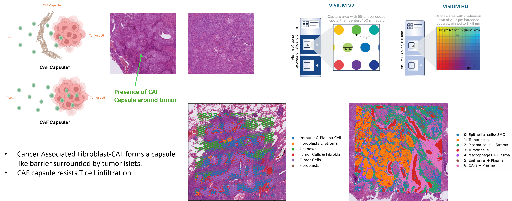

Identification of Tumor Gene Signatures Underlying Cancer-Associated Fibroblast–Driven T-cell Exclusion in Human Lung Cancer Using Spatial Transcriptomics
Problem. Which tumor gene signatures are associated with cancer-associated fibroblast (CAF) capsules and T-cell exclusion in lung squamous cell carcinoma?
Approach. We compared CAF-capsule-positive and negative tumors using Visium V2 and Visium HD spatial transcriptomics. The pipelines combined quality control, normalization, clustering, expert-reviewed annotation, and differential expression analysis; Cell2Location deconvolution helped remove mixed tumor spots in the V2 analysis.
Outcome. We identified eight candidate genes shared across both platforms and potentially associated with CAF-mediated T-cell exclusion. These exploratory associations require functional validation; gene identities remain undisclosed while the work is unpublished.
